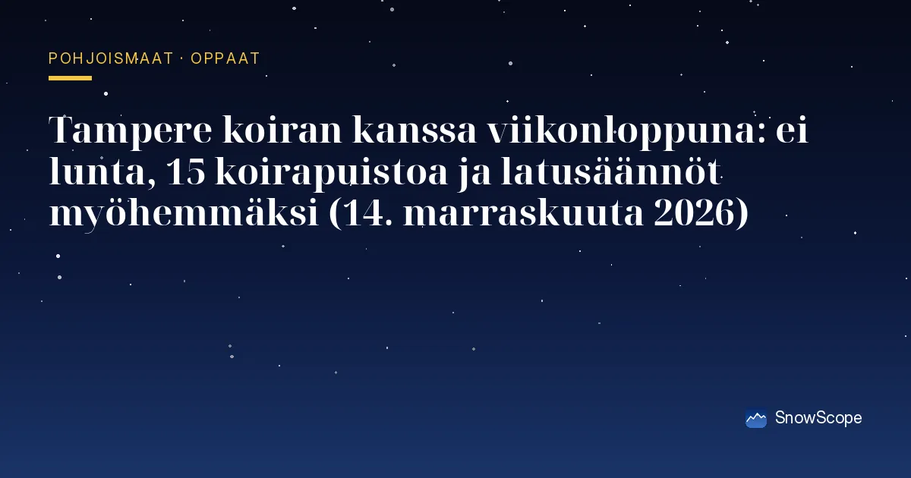

Tampere koiran kanssa viikonloppuna: ei lunta, 15 koirapuistoa ja latusäännöt myöhemmäksi (14. marraskuuta 2026)
Tampereen maa on vielä paljas perjantaina 14. päivänä, ja kaikkien neljän kaupungin lähellä olevan säähavaintoaseman mukaan lunta on nolla senttimetriä. Lauantaina voi tulla märkää lunta muutaman millimetrin verran, mutta se ei jää kiinni kylmään maahan. Tämä on ihanteellinen viikonloppu koirapuistoihin ennen kuin talvi saapuu – ja hyvä aika tietää säännöt, jotka voimaan tulevat muutaman viikon päästä lasketteluratojen avautuessa.
Katso kohteen Tampere lumiennuste reaaliajassa SnowScope-sovelluksessaLumensyvyys, puuterihälytykset ja 3D-kartta, ilmaiseksi.
Koirapuistot: paras valinta tänä viikonloppuna
Tampereella on 15 aidattua koirapuistoa ympäri kaupunkia, joten muta ja paljas maa tänä viikonloppuna eivät ole este kunnolliselle juoksulle. Hakametsä Uudenkylänkadulla on yksi suurimmista, 4 478 m²:n kokoinen, ja siellä koirasi voi polttaa energiaa ilman rajoituksia. Isolammenpuisto jakaa suuret ja pienet koirat erillisiin osioihin, joten hermostunut terriini tai läiskivä setteri löytää oman tilansa. Rantaperkiö tuntuu enemmän metsältä, jos haluat paeta kaupunkitunnelmasta.
Santalahti houkuttelee kahdella asialla: koirapuisto Simppoonkadulla ja sen vieressä koirille tarkoitettu uintipaikka. Se saattaa vetää kesällä enemmän kuin marraskuussa, mutta se osoittaa, kuinka hyvin kaupunki ajattelee, mihin koirat ja niiden omistajat viettävät aikaa. Missä tahansa aidatussa puistossa koirasi voi vapaasti irrallaan koko vuoden ympäri ilman erityislupaa tai kauden rajoituksia.

Johtosäännöt: nyt on sinun vapauden ikkuna
Rakennetulla Tampereella koiran on oltava johdossa koko vuoden. Se on lakia. Kaupungin ulkopuolella, maaseudulla ja metsissä säännöt vaihtuvat metsästyskauden mukaan. 1. maaliskuusta 19. elokuuta saakka koirat on oltava johdossa tai välittömän kutsun kuulumattomissa, jotta ne eivät aja riistaa. Nyt marraskuun puolivälissä olet välivälissä: koirat voivat juosta vapaasti avoimella maaseudulla ja metsissä ilman tuota kausivaatimusta. Nauti siitä, kun se kestää.
Luonnonsuojelualueet pyytävät kävijöitä pitämään koirat hallinnassa vaikka sitä ei olisi juridisesti vaatimuksena. Kun olet laskettteluradan päällä, jonka kaupunki on hiehkotanut hiihtoa varten, kuva muuttuu jälleen: koirat eivät yksinkertaisesti ole sallittuja, paitsi muutamilla erityisillä illoilla viikossa koirille varatuilla lasketteluratoilla Peltolammin hiihtokeskuksessa.
Koirille varattu laskettelutie: mitä sinun tulee tietää
Kun lumi saapuu ja lasketteluradan hiihtotiet avautuvat, useimmat Tampereen hiehkotueista hiihtokeskuksista ovat koirien ja kävelyläisten ulottumattomissa. Mutta kaupunki tekee yhden poikkeuksen: koirille varattu laskettelutie Peltolammin hiihtokeskuksessa, avoinna asetetuilla illoilla viikossa. Jos haluat laskea hiihtää koirasi juoksiessaan rinnallasi, se on paikka tehdä se. Koiran on oltava johdossa, sinun on oltava suksi jalassa, ja joukkojen on oltava vähintään 100 m etäisyydellä toisistaan, jotta koira ei häiritse muita hiihtäjiä.
Tarkista kaupungin lasketteluradan sivu, kun ensimmäinen lumi laskeutuu. Se kertoo sinulle, mitkä illat koirille varattu laskettelu on avoinna ja mihin aikaan voit käyttää sitä. Tältä sivulta löydät myös tiedon siitä, milloin päälasku avautuu – todennäköisesti muutaman viikon kuluttua, kun lumensyvyys saavuttaa aikaisemmin mitatun syvyyden marraskuun puolivälissä.
Tämän viikonlopun sää ja mitä pakata
Lauantain ennuste on märkä ja lauha, jossa on enintään 1 cm lunta, joka putoaa kylmään maahan, mutta ei todennäköisesti jää kiinni. Sunnuntai lämpenee noin 6°C:een, joten lauantai-aamuna putoava lumi todennäköisesti häviää iltapäivään mennessä. Molemmat päivät sopivat pitkälle kävelylle, mutta muta on paksua ja puistot ovat märkiä. Tuo vanha pyyhkimä autoon koiran tassujen pyyhkimistä ennen kuin ne levittävät mutaa kotonasi.
Iltapäivät ovat hyvin pimeitä marraskuun puolivälissä. Poistu kotoa koiran kaulukseen kiinnitetyllä valolla ja käytä itse heijastinta. Koirapuistot ovat valaistuissa, mutta niille johtavat polut eivät välttämättä ole, ja järven ranta-alueet – joissa jää ei ole vielä kiinteä – voivat olla vaikea nähdä heikossa valossa. Heijastava varustus tekee molemmat näkyviksi autoille ja toisillenne.
Järvet: varoitus
Näsijärvi ja Pyhäjärvi eivät ole jäässä vielä. Varhainen jää rannalla on ohutta ja voi hajota ilman varoitusta. Jos koirallasi on tapana juosta jäätyneelle vedelle, välttää ranta-aikojen polkuja tänä viikonloppuna. Odota, kunnes jää on näkyvästi paksua ja kaupunki on tarkistanut sen, mitä yleensä tapahtuu myöhään marraskuussa tai joulukuussa.
Vinkkejä laskijoille
- Lauantain märkä lumijääde kylmään maahan voi jäätyä yön aikana: ranta-aukio ja kaikki altistuneet kalliit voivat olla liukkaita sunnuntai-aamuna – testaa askeleesi.
- Mutakausi on nyt. Käytä vedenpitäviä saappaita, joissa on hyvä pito, ja pakaa pyyhkimä ennen kuin poistu kodista.
- Järvet eivät ole jäässä: pidä koira johdossa lähellä vettä, kunnes jää on riittävän paksu ja kaupunki on vahvistanyt, että se on turvallista.
- Pimeitä iltapäiviä tarkoittaa, että tarvitset valoa ja näkyvyyttä. Kaulukseen kiinnitettävä valo maksaa vähän ja voidaan jättää päälle koirapuistojen kävelyllä.
- Säästä metsäjuoksut kuivalle päivälle. Koirapuistoilla on kuivatus ja ne on rakennettu mutaisille tassuille; metsän pohja marraskuussa on suo.
Näistä luvuista
Hiihtokeskusten lumensyvyydet ovat syvin lumi keskuksen ylärinteillä näytettynä päivänä; ne ovat arvioita alueelle, eivät mittaus yhdessä pisteessä. Ennusteet voivat muuttua. Lue aina virallinen lumivyöryennuste ennen rinteiden ulkopuolelle lähtöä.
Viittaa tähän raporttiin
Tutkimukseen, opetukseen tai mediaan: luvut ja kaaviot ovat vapaasti käytettävissä CC BY 4.0 -lisenssillä tällä lähdeviitteellä.
SnowScope (2026), Tampere koiran kanssa viikonloppuna: ei lunta, 15 koirapuistoa ja latusäännöt myöhemmäksi (14. marraskuuta 2026), https://snowscope.app/blog/fi/2026/11/tampere-dog-snow-weekend-14-november-2026.html, luettu 2026-11-14
SnowScope (Atlas Labs). (2026, November 14). Tampere koiran kanssa viikonloppuna: ei lunta, 15 koirapuistoa ja latusäännöt myöhemmäksi (14. marraskuuta 2026). SnowScope snow reports. https://snowscope.app/blog/fi/2026/11/tampere-dog-snow-weekend-14-november-2026.html
BibTeX
@misc{snowscope2026tamperedogsnowweekend14n,
author = {{SnowScope (Atlas Labs)}},
title = {Tampere koiran kanssa viikonloppuna: ei lunta, 15 koirapuistoa ja latusäännöt myöhemmäksi (14. marraskuuta 2026)},
year = {2026},
month = nov,
howpublished = {\url{https://snowscope.app/blog/fi/2026/11/tampere-dog-snow-weekend-14-november-2026.html}},
note = {Published 2026-11-14 13:29 UTC; accessed 2026-11-14}
}· CC BY 4.0 · Menetelmät, data ja työkalut →
Seuraa: Tampere
Ilmainen: viesti, kun uutta lunta on tulossa, ja ennuste joka aamu.